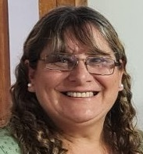

Presidente
Ricardo Sosa

Secretaria
Giselle Monzón

Memorias de nuestro pueblo Fontana, es una Fundación que nació en el año 2019.
Por resolución N° 175
de fecha 01 de marzo de 2019 de personería jurídica y registro público de comercio.
Nuestros
antecedentes datan desde el año 2006 cuando nos conformamos como grupo de vecinos preocupados
por rescatar la historia y cultura de nuestro pueblo, logrando conformarnos como asociación civil desde 2010
a 2019.